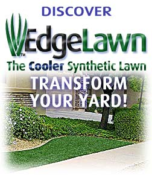

Palm Beach County Putting Greens, Synthetic Lawns and Artificial Turf
West Palm Beach synthetic backyard putting greens - Palm Beach County artificial grass lawn turf
Custom Putting Greens & Synthetic Lawn Gallery!
Pics are worth 1000 words. Visit our gallery of synthetic lawns & artificial putting greens! See how great your own backyard Putting Green or golf landscape adds value & beauty to your lot.
TaylorMade Golf ™ says PUTTERS EDGE!
You're making golf turf right when top TaylorMade Golf™ executives choose your best putting green turf to unveil their amazing new Rossa putters! Get putting greens pictures & golf tips!
Putters Edge is TURF
backyard putting green turf
indoor putting green turf
driving and chipping mat turf
putting green fringe turf
portable rollout green turf
synthetic grass lawn turf
artificial yard landscaping turf
athletic sports turf
soccer pitch turf
synthetic grass landscape turf
artificial pet lawn turf
synthetic horse stall turf
custom color artificial turf
Don't miss our Synthetic Grass info!

Backyard putting greens, artificial sports turf, synthetic grass and artificial lawn turf for Palm Beach, Coral Springs, Pompano Beach, Deerfield Beach, Boca Raton, Jupiter, Palm Beach Gardens, Wellington, Manalapan, Boynton, Delray, West Palm Beach, Lake Worth, Palm Springs
Synthetic turf dealers for putting greens in South Florida, Palm Beach County, Broward County, FL, FLA
Not just any backyard putting green - These synthetic golf greens are Palm Beach County's best putting greens, period!
Putters Edge putting green turf is golf, golf tips, artificial turf, synthetic turf in the Palm Beach County. Backyard putting greens or even artificial turf for horse stalls, artificial turf installation of synthetic grass. West Palm Beach putting greens as well as Florida putting greens with putting tips about putting greens, & artificial putting greens, too!
Home Putting Solutions - Palm Beach
West Palm Beach putting greens, turf & golf landscaping
featuring Putters Edge™ exclusive PAR™ Synthetic Turf
for the finest in Artificial Backyard Putting Greens
Own the Green - Own Your Own Custom Golf Practice Facility!
Q: Where do most golfers waste countless strokes every round?
A: All around the putting green.
So you create a professional quality putting green and short-game practice area for your own backyard or office.... Suddenly, short game practice is fun, easy and quickly rewarded by your new lower scores on Palm Beach County golf courses!
Your golf buddies will turn green, while you happily take their green!
Home Putting Solutions - Palm Beach proudly provides greater Palm Beach County with the finest professionally installed synthetic putting greens using Putters Edge "Pure Absolute Roll" (PAR) Turf and our exhaustively tested and refined installation methods. We're talking about a golf practice system far more advanced and realistic than your average backyard putting green... Ready to live a Golfer's Dream?
Then transform your home into a custom, personalized practice facility. You're ready for the finest synthetic putting greens, chipping mats, artificial turf and specialty golf products - exclusively from Home Putting Solutions - Palm Beach.
Home Putting Solutions - Palm Beach™ also supplies & installs high-tech synthetic grass turf systems for amazing Artificial Lawns
There's nothing that anchors a landscape like a beautiful lawn. In West Palm Beach, lawns are costly, high maintenance and a drain on our water resources.
That's why Home Putting Solutions - Palm Beach also carries an extensive line of luscious, worry-free EdgeLawn Synthetic Lawn products, for the very greenest sustainable green environments. So, turn off that water, and forget about chemical fertilizers and weed control in your front yard and backyard!
But there's something extra special to the EdgeLawn story...
Heat is also a concern in the summer, and everything is affected by it, including artificial turf. We're excited to know we can confidently offer you the most advanced, temperature-controlled synthetic "no-mow" ; grass system available to Palm Beach County - thanks to our specialized process that keeps EdgeLawn significantly cooler than other artificial lawn installations. And that's a pretty cool thing.
Learn more! Check out Home Putting Solutions - Palm Beach's
Frequently Asked Questions: Synthetic Grass and Artificial Lawn Turf
Home Putting Solutions - Palm Beach serves Palm Beach County
When you need golf turf, putting green turf or synthetic lawn turf in
Palm Beach, Coral Springs, Pompano Beach, Deerfield Beach, Boca Raton, Jupiter, Palm Beach Gardens, Wellington, Manalapan, Boynton, Delray, West Palm Beach, Lake Worth, Palm Springs...
You need Home Putting Solutions - Palm Beach! Call us!